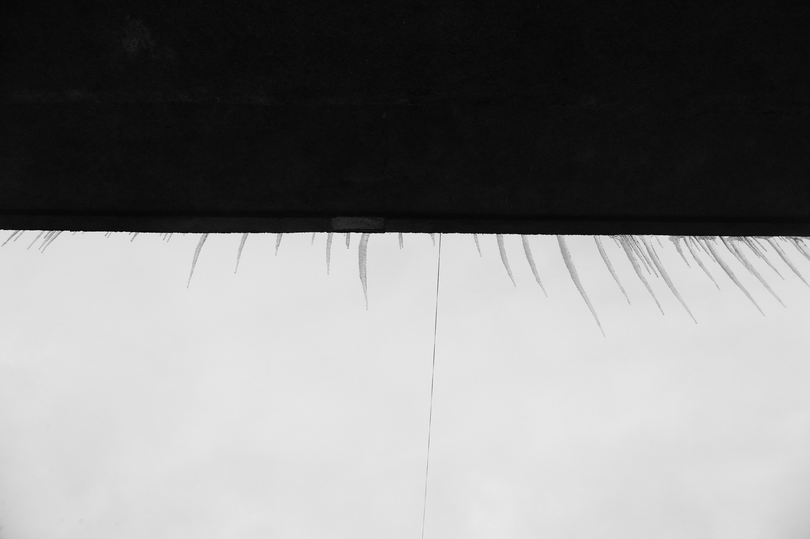

Photographer & Visual Artist
Sasha
Kljuchenkow
Portrait · Fashion · Contemporary Art
Documentary · Landscape
Scroll ↓
Selected work
01—05


04 — Documentary
Documentary Photography
Stories, places and people observed in real time.

Documentary / Personal work
A visual practice rooted in observation, atmosphere and the unexpected moments of everyday life.
05 — Landscape
Landscape
Space, light and the quiet presence of place.

Landscape / Personal work
A series of landscapes exploring space, light and the quiet presence of place.

FEATURED IMAGE
About
Photography
is my language.
I work between observation and interpretation — looking for quiet tension, human presence and the space between reality and perception.
Portrait / Fashion / Contemporary Art / Documentary / Landscape
Contact